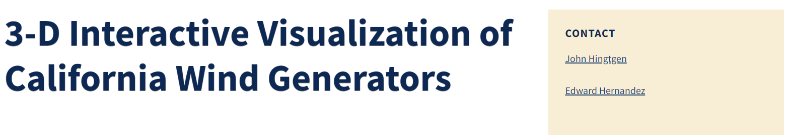

Wind Power Visualization Project
Professional Project Developed for the California Energy Commission

This project consists of two different visualizations. One visualization is based on each plants capacity factor, which is a ratio of power generated to theoretical maximum power producable. The second, more complex visualization shows how this capacity factor changes per month for each power plant during the years 2014-2020.
The final product is displayed on the CEC's official website under the credit of my supervisor and myself.
View the landing page for the 2020 Annual Capacity Factor visualization here.
View the 2020 Annual visualization here.
View the landing page of the monthly visualization here.
View the monthly visualization directly here.